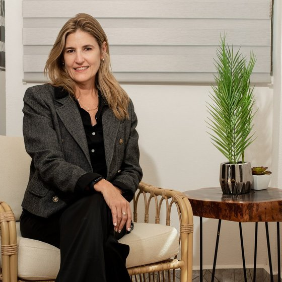
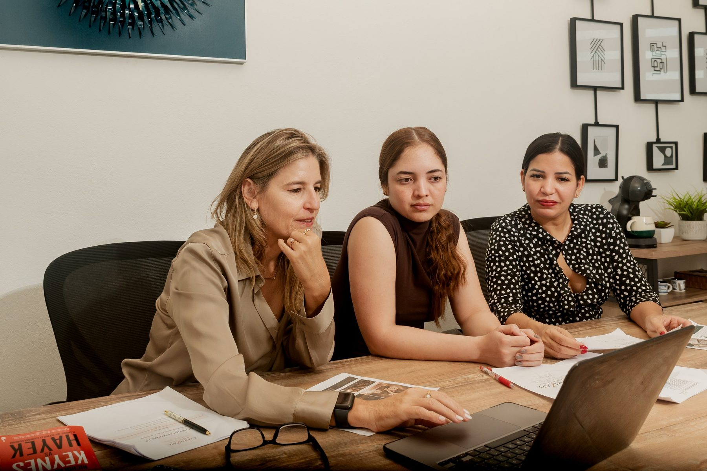
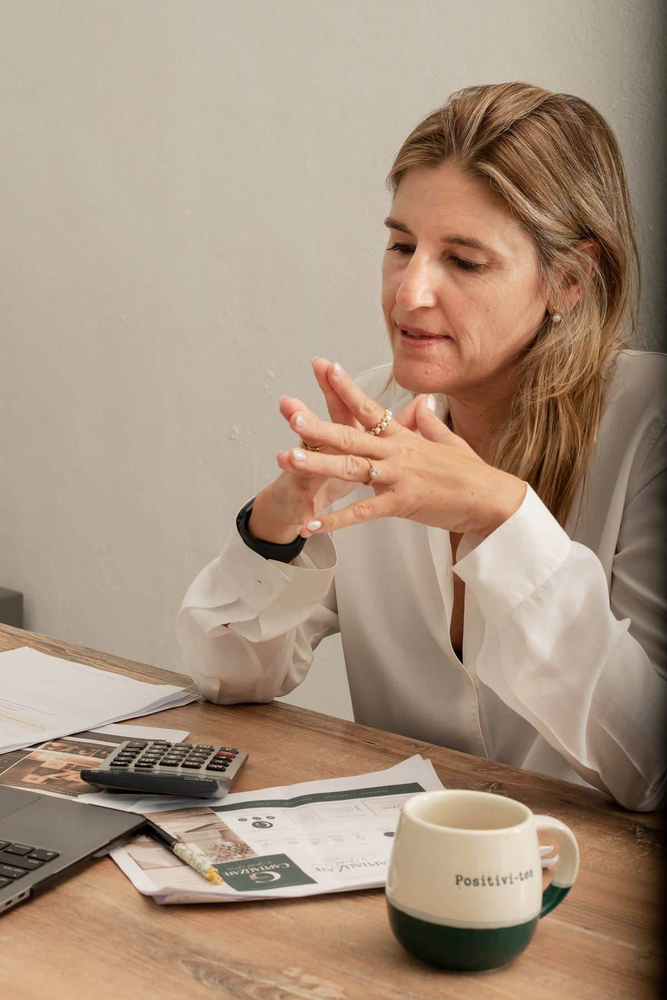
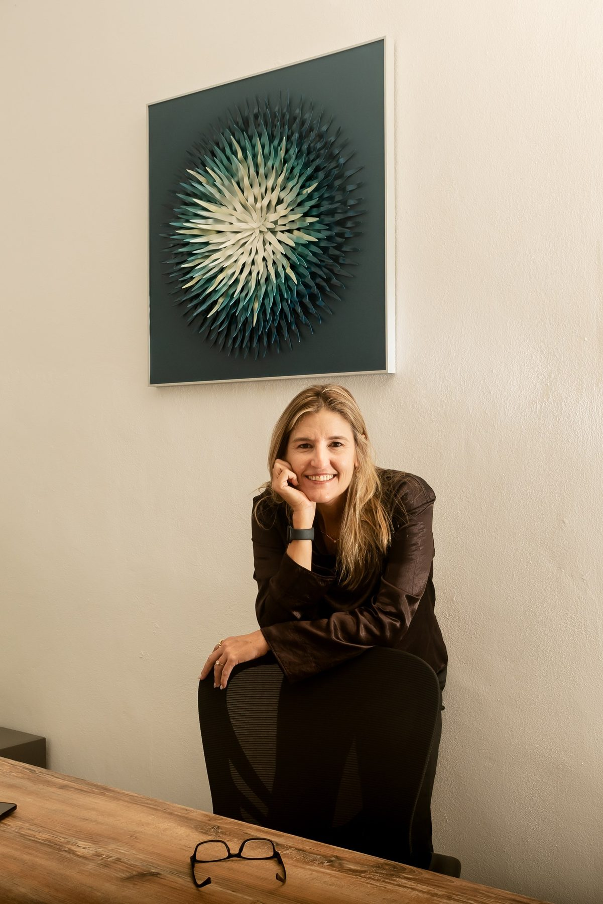

Asignación de recursos y productividad
Analizamos dónde se pierde valor en su empresa sin que se note y dónde sus recursos producirían más.
Consultoría empresarial con fundamento económico
No damos consejos. Le ayudamos a decidir con racionalidad.
Con el Modelo MARL, Modelo de Asignación de Recursos Limitados, medimos en su negocio cómo se usan sus recursos y le decimos dónde ponerlos para que generen más valor.

Le asesora
Gretel García
Usted no necesita más información. Necesita un método racional para convertirla en una decisión.
Qué hacemos
Trabajamos en tres frentes:

Analizamos dónde se pierde valor en su empresa sin que se note y dónde sus recursos producirían más.
Antes de contratar, invertir o expandirse, ponemos sus opciones lado a lado con números.
Abrir otra ubicación, invertir en capacidad, incorporar tecnología: analizamos lo que exige cada camino y el entorno económico en que tendrá que funcionar.
Mapa de valor
Capitalízate nunca empieza preguntando qué le falta a su empresa: empieza por lo que tiene, cómo lo utiliza y qué valor le está generando.
No optimizamos una parte de la empresa a costa de destruir valor en otra. Mejoramos el resultado del sistema completo.
El tiempo no es un recurso como los demás: es la forma de medir cómo se usa cada uno de los cuatro por hora. Por eso el Modelo MARL analiza no solo cuántos recursos tiene su empresa, sino cuánto rinden en cada hora.
Con ese mapa en la mesa, nos preguntamos:
¿Está frente a alguna de estas decisiones?
¿Dónde se están yendo el tiempo, el dinero y la capacidad de su empresa sin producir suficiente valor?
¿Compro una máquina nueva o contrato a una persona más?
Mi negocio está creciendo: ¿me conviene expandirme?
¿Tengo el número de trabajadores que realmente necesito?
¿Estoy dedicando mi tiempo a lo que me corresponde como dueño?
¿Me conviene entrar a un nuevo mercado o lanzar una campaña?
¿Dejo mi empleo para poner mi propio negocio?
En la consulta empresarial definimos juntos el alcance y si Capitalízate es lo que su decisión necesita.
El Modelo MARL · Modelo de Asignación de Recursos Limitados
Toda empresa trabaja con recursos escasos. El Modelo MARL mide cómo se están asignando esos recursos, dónde generan valor y dónde se pierde, y compara las alternativas por su costo de oportunidad. Se apoya en tres ideas de la economía: la productividad de los factores (Solow), el tiempo como recurso escaso (Becker) y las decisiones bajo información limitada (Simon).
Precisamos la decisión que tiene enfrente y lo que está en juego.
Medimos en su empresa cómo se distribuyen sus recursos.
Definimos las preguntas correctas, también las que conviene hacer a sus especialistas.
Integramos los datos de su empresa con el entorno económico en que la decisión tendrá que funcionar.
Evaluamos cada alternativa por su costo de oportunidad y su retorno esperado.
Usted decide sabiendo qué gana y qué deja de ganar con cada camino.

Un mapa de cómo su empresa usa cada recurso, expresado en porcentajes; las alternativas comparadas por su costo de oportunidad, y una recomendación clara con su impacto económico esperado.
El modelo se aplica en su empresa, donde ocurren las cosas. Si lo prefiere, el primer acercamiento puede ser en nuestra oficina o en línea.
Para quién
Muchas decisiones se toman sin tiempo y sin alguien con quien analizarlas. Capitalízate le acompaña en ese análisis.
Quiénes somos
Capitalízate es una firma boutique de consultoría empresarial, fundada en Cancún en 2007. Su filosofía es sencilla: capitalizar es hacer que aquello que la empresa ya tiene produzca más valor.

Fundadora
Licenciada en Economía, Maestra en Administración de Empresas y doctorante. Asesora directamente a empresarios de distintos giros (turismo, restaurantes, comercio y servicios), imparte capacitación a empresas y administra su propia empresa inmobiliaria. Durante más de 20 años ha formado profesionales en la Universidad Anáhuac Cancún, en licenciatura, maestrías, diplomados, cursos y talleres, y ha diseñado programas académicos y modelos de negocio.
Conocimiento académico + experiencia operativa + capacidad para enseñar
Es el método propio de Capitalízate para analizar decisiones empresariales. Mide cómo asigna su empresa sus recursos limitados y compara sus alternativas antes de decidir, en seis pasos.
No necesariamente. El modelo trabaja con proporciones y porcentajes, no con montos. Así podemos analizar su empresa a fondo sin que usted exponga cantidades sensibles.
Analiza con fundamento económico las decisiones importantes de su empresa: los recursos que compromete, las alternativas que tiene y el entorno en que la decisión tendrá que funcionar, para que usted decida con racionalidad.
Sí. Es una sesión de 60 minutos, presencial o en línea, en la que usted plantea su decisión y definimos juntos el alcance. El costo se le informa al agendar.
Capitalízate cobra por el valor de su trabajo, no por hora. Después de la consulta empresarial se propone el alcance y los honorarios de acuerdo con la decisión y lo que está en juego para su empresa.
No. Capitalízate no sustituye a sus especialistas: analiza sus decisiones desde su impacto económico, le ayuda a formular las preguntas correctas e integra sus respuestas en una decisión empresarial completa.
Es el valor de lo que su empresa deja de obtener al elegir una opción en lugar de otra. Considerarlo evita decisiones que parecen convenientes pero terminan costando más.
Sí. Capitalízate tiene su oficina en Cancún, pero atiende en línea a empresas de cualquier ciudad de México y del extranjero.
Principalmente con empresas establecidas, donde ya existe cierta complejidad administrativa pero muchas decisiones todavía están concentradas en el propietario. También acompaña a personas que están por emprender.
En Av. Huayacán 19, Mza. 130, Lt. 19, SM 313, C.P. 77560, Cancún, Quintana Roo. La atención es con cita; puede iniciar una consulta empresarial desde el formulario del sitio o por WhatsApp al 998 180 4486.
Contacto
Cuéntenos brevemente qué decisión, problema u oportunidad desea analizar. Esta información nos permitirá comprender el contexto antes de la consulta.
Inicie su Consulta Empresarial desde el formulario.
Quiero tomar una decisión importante para mi empresa Toma unos 2 minutos